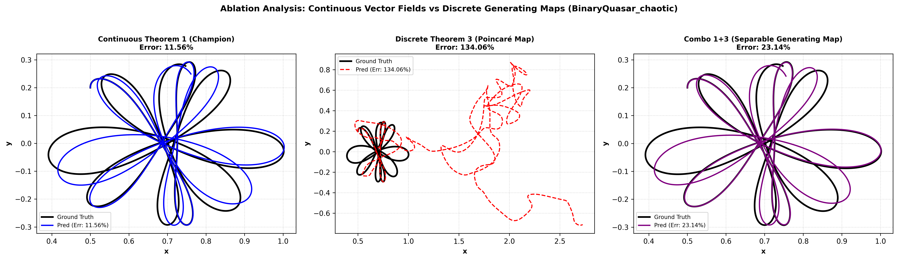
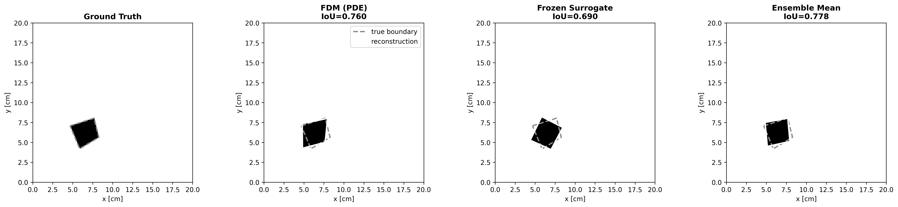
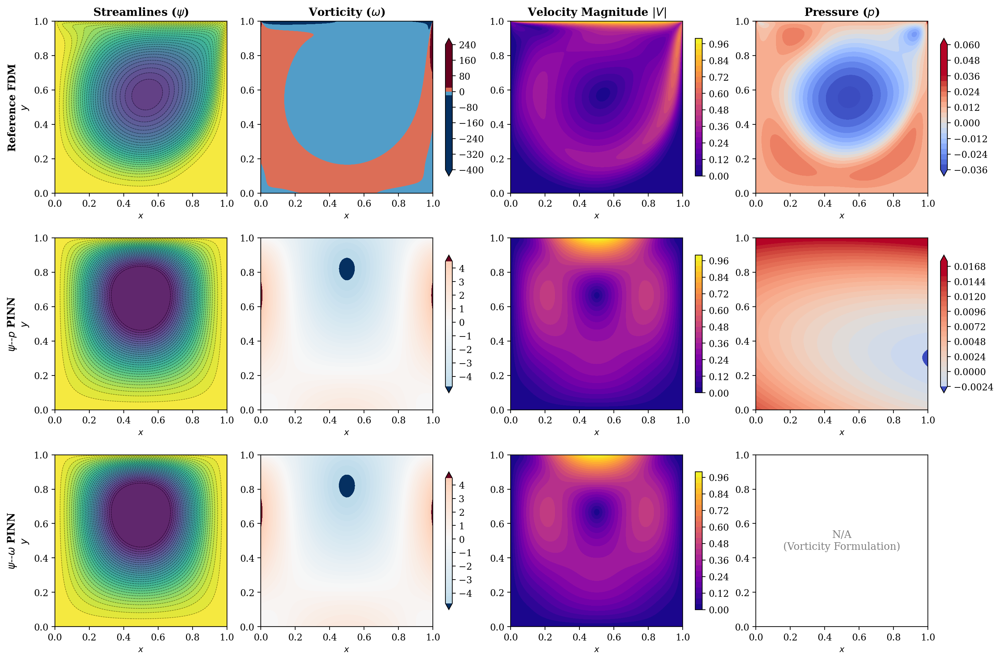
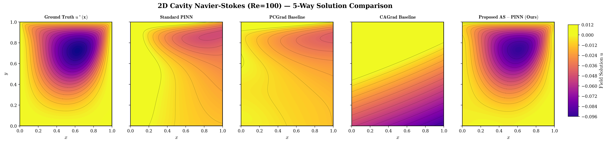
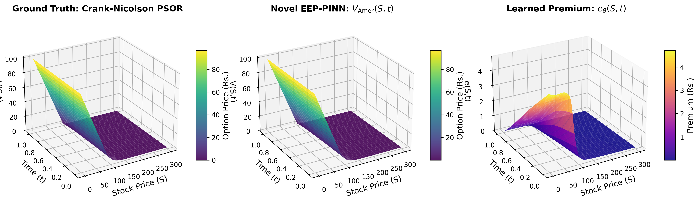
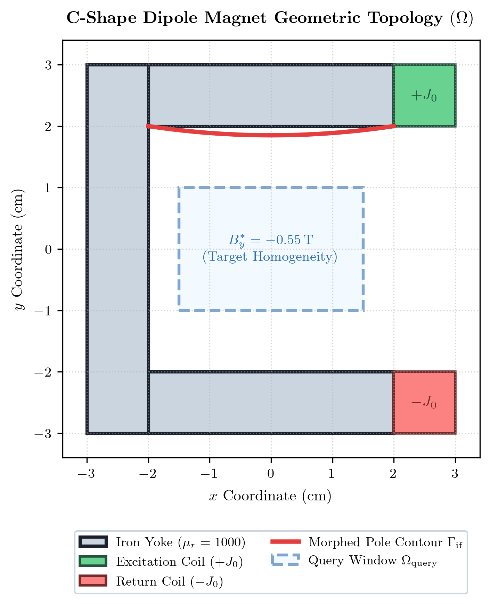
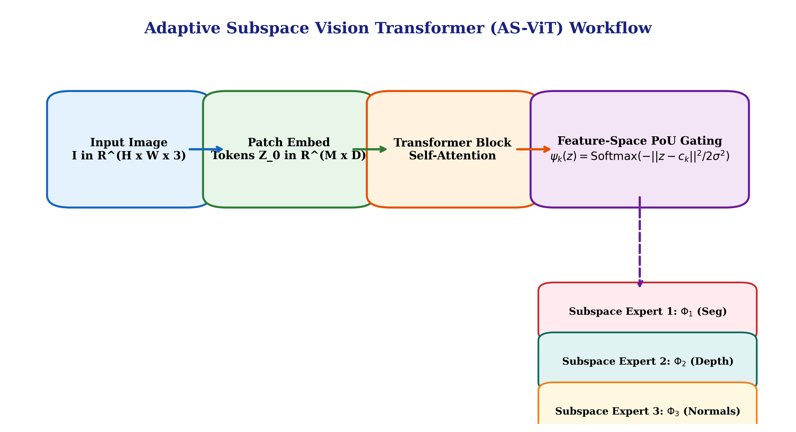
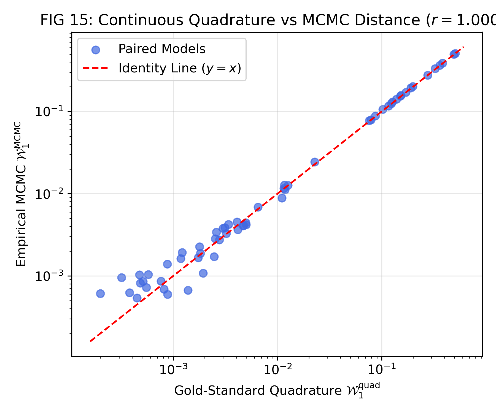
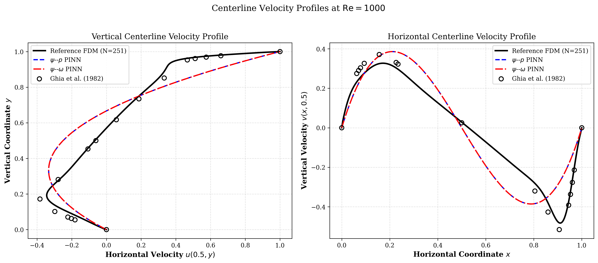
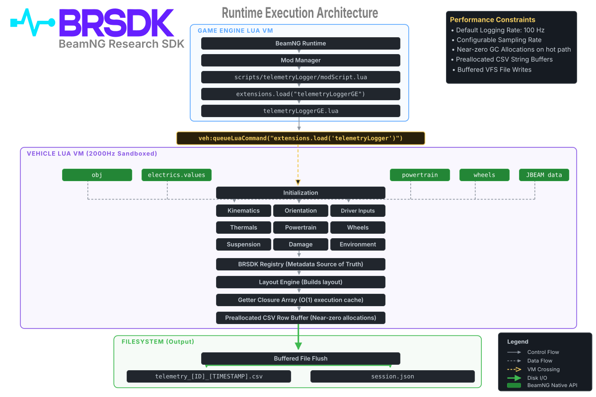

Computational Mathematician & Scientific Machine Learning Researcher developing high-fidelity physics-informed architectures, symplectic dynamical systems, and bare-metal high-performance PDE solvers.
Interactive showcase of 10 flagship mathematical and computational physics implementations.

Click to enlargeProves exact separable Kinetic-Coriolis Hamiltonian splitting ($\nabla_{\mathbf{z}} \cdot \mathbf{f}_\theta \equiv 0$) and Arnold extended contact phase spaces ($\mathcal{K}_\theta \equiv 0$) across 6 chaotic celestial systems (Binary Quasars, Sitnikov 5-body, CR3BP). Achieves up to $126.4\times$ Fourier error collapse on gravitational saddle points.

Click to enlargeResolves the logarithmic ill-posedness of the continuous Calderón problem via stochastic directional Jacobian-Vector Product (JVP) supervision on $\mathbb{S}^{63}$. Delivers a $56.8\times$ wall-clock speedup ($35.6\,\mathrm{ms}$ vs $2.02\,\mathrm{s}$/step) with bounded $342.8\,\mathrm{MB}$ VRAM and $99.57\%$ noise robustness.

Click to enlargeIdentifies operator diffusion and false convergence in continuous $\psi-\omega$ PINNs caused by lack of discrete spatial stencils for Thom's wall-vorticity formula. Formulates hard-constrained $\psi-p$ Helmholtz-Hodge projection, successfully capturing secondary corner vortices at $Re=1000$ validated against Ghia (1982).

Click to enlargeAutonomous domain decomposition engine using vectorized per-sample Gram alignment profiling (`torch.func.vmap`) with exact zero-disruption cleavage invariance ($\|u^{(N+1)} - u^{(N)}\| = 0$). Verified across 9 canonical PDEs, achieving a $725.6\times$ loss reduction over standard PINNs on high-frequency Helmholtz.

Click to enlargePrices correlated American basket options up to $d=50$ assets (1,225 correlations) by embedding the analytical Kim/CJM Early Exercise Premium decomposition. Directional autograd trace contraction computes high-dimensional diffusion in $\mathcal{O}(d)$ linear complexity ($<3\,\mathrm{GB}$ VRAM), validated against 100K-path Longstaff-Schwartz Monte Carlo.

Click to enlargeDecomposes parameter manifolds into orthogonal direct-sum subspaces ($\Theta_0 \oplus \Theta_1$ with $\mathcal{W}_0 \mathcal{W}_1^T = \mathbf{0}$) coupled via a $C^2$ Quintic Hermite seam operator ($\psi(\xi) = 6\xi^5 - 15\xi^4 + 10\xi^3$). Formally proves structural gradient orthogonality ($\langle \nabla\mathcal{L}_{\mathrm{if}}, \nabla\mathcal{L}_{\mathrm{des}} \rangle \equiv 0$) on saturated domains.

Click to enlargeResolves multi-task negative transfer in dense vision backbones (segmentation, depth, normals, boundaries) by tracking inter-task Gram matrix negative eigenvalues ($\lambda_{\min}(\mathcal{G}) < -\tau$) and dynamically routing latent expert subspaces using Partition of Unity (PoU) gating ($+5.84\%$ mean gain on NYUv2).

Click to enlargeFormally investigates how PINN forward surrogate approximation errors distort Bayesian inverse posteriors. Formulates the Bayesian Fidelity Ratio (BFR) based on the Kantorovich-Rubinstein 1-Wasserstein optimal transport distance normalized by empirical MCMC stochastic noise floors.

Click to enlargeHigh-resolution 2D incompressible fluid solver on dense $251 \times 251$ grids ($Re=1000$). Peaceman-Rachford ADI vorticity solver + Red-Black SOR Chebyshev acceleration ($\omega=1.80$) breaking loop dependencies into bipartite sublattices, achieving a $31.9\times$ iteration drop validated against Ghia (1982).

Click to enlargeDeterministic real-time telemetry extraction framework operating inside the 2000Hz Vehicle Lua physics thread of BeamNG.tech. Features static pre-allocated ring buffers, zero dynamic heap allocations on the hot path (0 bytes/s GC allocations), and RFC 8259 JSON metadata sidecars.
Download detailed documentation of publications, mathematical formulations, and engineering toolchains.
Comprehensive 4-page academic CV detailing undergraduate research trajectory, working manuscripts, exact mathematical proofs, supervisor details, and awards.
Download Academic CV (PDF)Concise 2-page industry-tailored resume emphasizing high-performance scientific computing, deep autograd engineering, and production codebases.
Download Industry Resume (PDF)